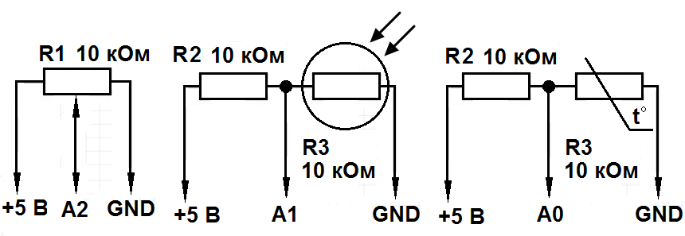

Звуковая сигнализация на Arduino UNO
Рассмотрим реализацию звуковой сигнализации какого-либо явления. Для этого мы будем использовать пьезодинамик. Схема электрическая принципиальная устройства показана на рис. 1.

Рис. 1 - Схема электрическая принципиальная устройства
| Наименование | Номинал | Количество |
|---|---|---|
| Плата Arduino | Arduino Uno | 1 |
| Резистор постоянный | 10 кОм | 2 |
| Термистор | B57164-K 103-J | 1 |
| Фоторезистор | VT90N2 | 1 |
| Переменный резистор | 10 кОм | 1 |
| Пьезоизлучатель | Пассивный | 1 |
| Макетная плата | 1 | |
| Соединительные провода | 10-15 |
Скетч №1
#define TERM A0
#define FOTO A1
#define POT A2
#define BUZZ 3
void setup()
{
Serial.begin(9600);
Serial.println("Privet!");
pinMode(TERM, INPUT);
pinMode(FOTO, INPUT);
pinMode(POT, INPUT);
pinMode(BUZZ, OUTPUT);
}
void loop()
{
int temp = analogRead(TERM);
int light = analogRead(FOTO);
int value = analogRead(POT);
if(temp < 450)
{Serial.println("Achtung!It's too hot!");
Serial.println("Temperature:");
Serial.println(temp);
tone(BUZZ, 3000, 1000);
delay(2000);
}
if(light > 400)
{Serial.println("Night is coming!");
Serial.println("Light:");
Serial.println(light);
tone(BUZZ, 4000, 1000);
delay(2000);
}
if(value > 700)
{Serial.println("Turn it off pls");
Serial.println("Value:");
Serial.println(value);
tone(BUZZ, 3000, 1000);
delay(2000);
}
}
При преодолении порога значений, издается писк, и выводится сообщение в Serial Monitor, причем, подача сигнала не прекратится, пока значение не вернется в нормальные рамки. Таким образом, можно сигнализировать разные ситуации с нашим устройством.
Функция Tone генерирует на пьезодинамике звуковую волну. В общем виде функция записывается так:
Tone(Номер пина, Частота, Длительность)
- Номер пина – это номер пина, к которому подключен пьезодинамик.
- Частота – частота звука, подаваемая на пьезодинамик.
- Длительность – длительность подаваемого сигнала в миллисекундах. Ее можно не задавать, но тогда звук не будет прекращаться пока вы не вызовите функцию noTone(Номер пина).